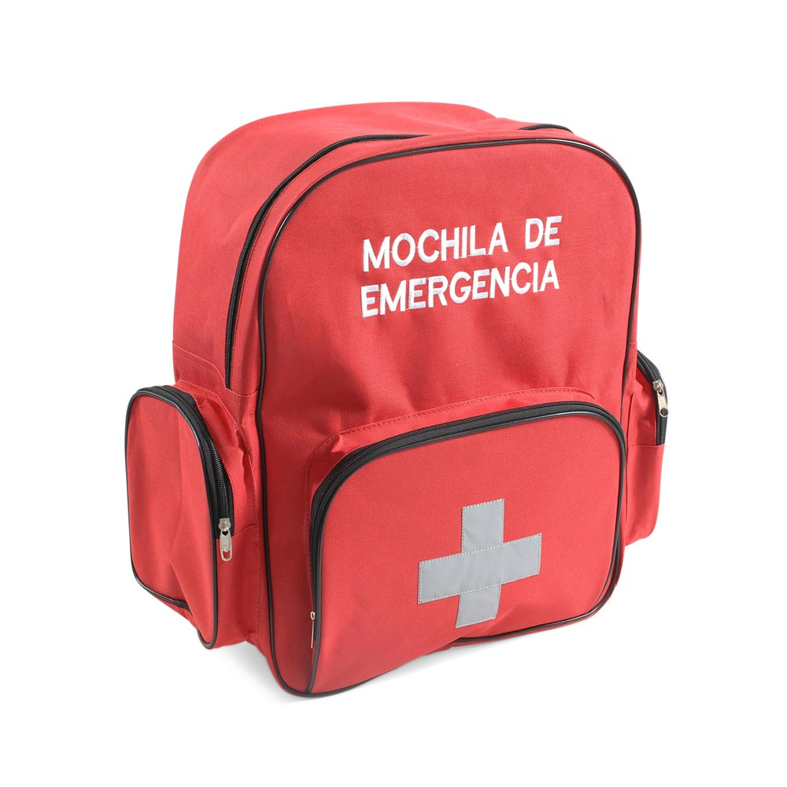
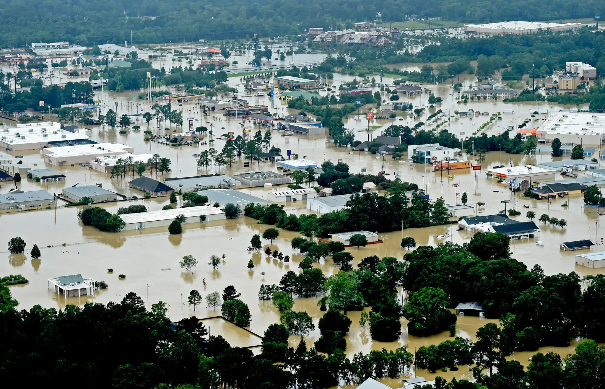
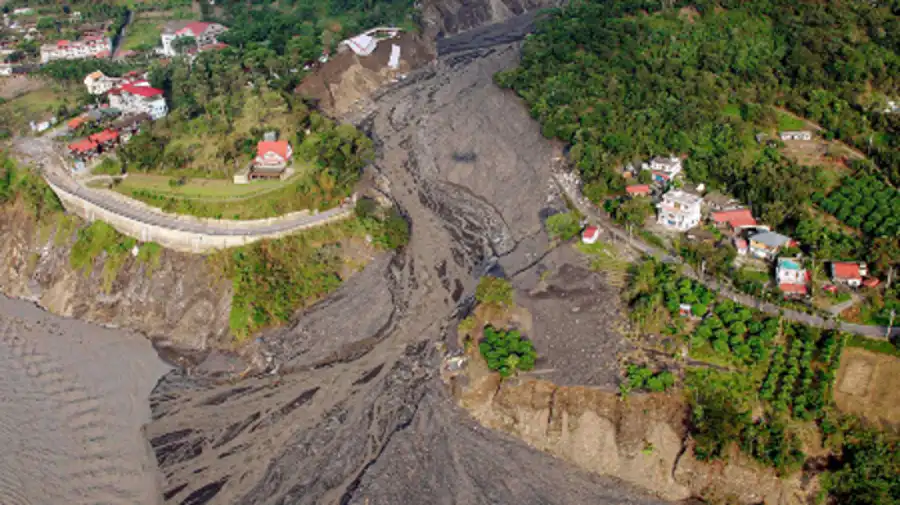

Destacado

¿Qué es un Kit de Emergencia de 72 Horas?
Un kit de emergencia de 72 horas, a menudo llamado "Kit de supervivencia" o "mochila de supervivencia", es un bolso portátil de artículos esenciales diseñado para ayudar a las personas a sobrevivir durante 72 horas en caso de un desastre o emergencia.
La duración de 72 horas se basa en la suposición de que los servicios de emergencia podrían tardar hasta tres días en llegar a las personas afectadas por desastres.
¿Cómo preparar a mi familia ante un terremoto?
La mejor manera es tener un plan de emergencia que incluya a todos los miembros del hogar.
Descargar PDF
¿Qué debe contener un kit de supervivencia de 72 horas?
¿Cómo puedo crear un plan de evacuación efectivo para mi hogar?
¿Qué debo hacer en caso de una emergencia médica durante un desastre natural?
Mantén la calma - Evalúa la situación - Pide ayuda - Proporciona primeros auxilios básicos - Sigue las instrucciones oficiales - Prepárate para evacuar
¿Dónde puedo encontrar refugio y asistencia en mi área después de un desastre?
Después de un desastre, puedes encontrar refugios y asistencia en tu área contactando a los servicios de emergencia locales. A menudo establecen refugios temporales y brindan servicios esenciales.
Terremoto

Los terremotos pueden ocurrir repentinamente, sin advertencia. Asegura tu hogar y ten un plan de emergencia preparado.
Inundación

Las inundaciones pueden ocurrir rápidamente. Conoce tus rutas de evacuación y ten un plan para proteger tus documentos importantes y pertenencias.
Huracán

Los huracanes traen vientos fuertes y lluvias intensas. Asegura los objetos exteriores, ten un kit de suministros y mantente informado sobre las advertencias locales.
Deslizamientos

Los deslizamientos de tierra pueden ocurrir con poca advertencia. Estate atento a las señales y asegúrate de que tu hogar no esté en una zona de alto riesgo.